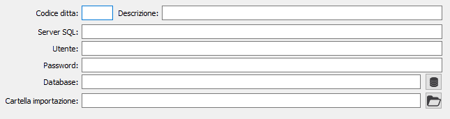

Configurazione gruppo IVA
In OS1, nel menù Configurazioni, Contabilità è presente la scelta Configurazione gruppo IVA dove devono essere inserite le aziende appartenenti al gruppo associate ad un codice ed una descrizione; per ogni azienda è possibile specificare le opzioni di connessione al database di OS1 (se presente su un server accessibile via rete) oppure un percorso da utilizzare per l'importazione dei dati tramite file sequenziale.
La tabella deve essere compilata solo dall’azienda capo gruppo.

Il campo “Codice ditta”, è utilizzato per indicare il codice ditta di OS1, nel caso di acquisizione tramite file deve necessariamente corrispondere.
I campi “Server SQL”, “Utente”, “Password”, “Database” , sono utilizzati per indicare il server i parametri di accesso e il nome del database su cui è presente la ditta con le informazioni da acquisire; nel caso in cui la ditta non sia accessibile via SQL Server è possibile utilizzare l'acquisizione tramite file ed il campo “Cartella importazione” è utilizzato per indicare la cartella dove sono presenti i file txt da acquisire.
I dati relativi alla connessione SQL e la cartella importazioni sono alternativi.